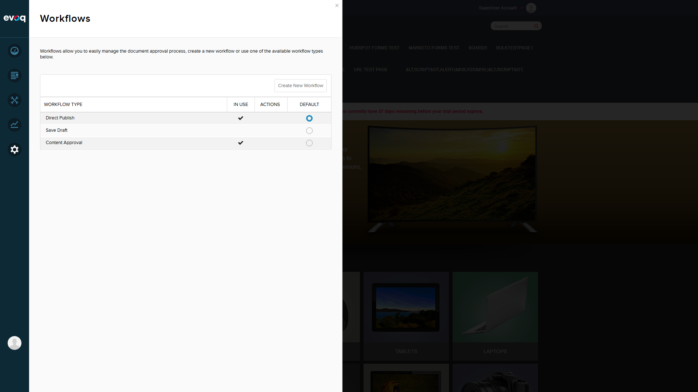
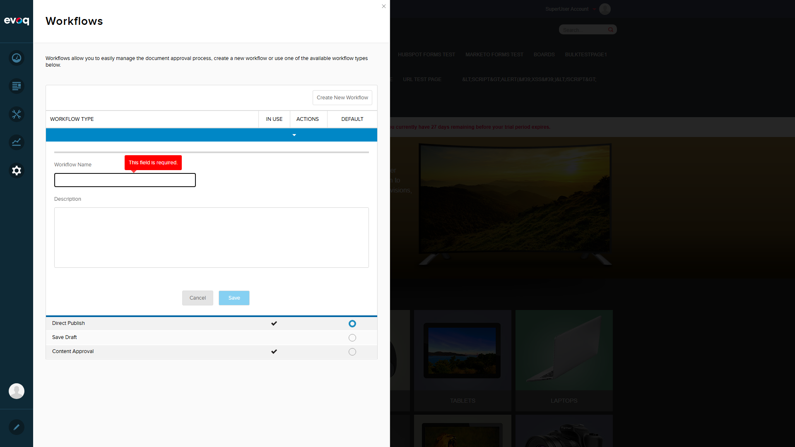

The Workflow module does NOT support multi-language localization. All UI elements remain in English regardless of the site's language setting. While the resource file (Workflow.resx) contains English strings that are loaded via DNN's localization framework, no language-specific resource files exist for other languages.
Key Finding: The Workflow feature is functional but lacks multi-language support - all text remains in English when viewing the site in Spanish, German, French, or Arabic locales.
Test Results Summary
Test Scenario
Result
Notes
Verify workflow UI in different languages
FAIL
UI remains in English on all locales (ES, DE, FR, AR)
Test notification messages localization
N/A
Cannot test - base UI not localized
Verify state names can be localized
FAIL
State names (Draft, Ready For Review, Published) remain in English
Check workflow descriptions localization
FAIL
Descriptions remain in English
Test error messages in different languages
FAIL
Validation message "This field is required." shown in English on German locale
Detailed Test Scenarios
Scenario 1: Verify Workflow UI in English (Baseline) PASS
Steps Taken:
Logged in as host user
Navigated to Settings > Workflow
Captured baseline screenshot in English locale (en-US)
Observation: The Workflow UI displays correctly in English with all expected elements:
Title: "Workflows"
Page description text
Table headers: WORKFLOW TYPE, IN USE, ACTIONS, DEFAULT
Button: "Create New Workflow"
Workflow list: Direct Publish, Save Draft, Content Approval

Scenario 2: Verify Workflow UI in Spanish Locale FAIL
Steps Taken:
Navigated to Spanish locale (es-AR) via URL http://localhost:8081/es-ar/
Opened Settings > Workflow panel
Captured screenshot
Finding: All Workflow UI elements remain in English despite being on the Spanish locale. No Spanish translations are displayed for:
Page title and description
Table headers
Button labels
Workflow names and descriptions
Scenario 3: Verify Workflow UI in German Locale FAIL
Steps Taken:
Navigated to German locale (de-DE) via URL http://localhost:8081/de-de/
Opened Settings > Workflow panel
Captured screenshot
Finding: Same result as Spanish - all UI elements remain in English. No German translations available.
Scenario 4: Test Validation/Error Messages in German Locale FAIL
Steps Taken:
On German locale (de-DE), opened the new workflow form
Cleared the Workflow Name field to trigger validation
Captured screenshot showing validation message
Finding: The validation error message "This field is required." is displayed in English even though the site is set to German locale. Error messages are not localized.

Scenario 5: Verify Workflow State Names Localization FAIL
Steps Taken:
On German locale, expanded the Content Approval workflow
Reviewed the workflow states table
Captured screenshot showing state names
Finding: Workflow state names remain in English:
State 1: "Draft" (not "Entwurf" in German)
State 2: "Ready For Review" (not "Zur Prüfung bereit")
State 3: "Published" (not "Veröffentlicht")
Additionally, all section headers ("Workflow States", "ORDER", "STATE", "ACTIONS", "MOVE") and buttons ("Add a State") remain in English.
Only one resource file exists (Workflow.resx) containing English strings
No language-specific variants exist (e.g., Workflow.de-DE.resx, Workflow.es-ES.resx, Workflow.fr-FR.resx)
The resource file contains 60+ localization keys for all UI elements
Resources are loaded via JavaScript: util.resx.Workflow
Root Cause: Localization infrastructure exists in the code (resource keys are defined and used), but translations have not been created. Adding language-specific resource files would enable multi-language support.
Recommendations
Create Language-Specific Resource Files: Add resource files for supported languages:
Workflow.es-ES.resx (Spanish)
Workflow.de-DE.resx (German)
Workflow.fr-FR.resx (French)
etc.
Translate All Resource Keys: The base file contains 60+ keys that need translation
Consider Dynamic State Names: Workflow state names like "Draft", "Published", "Ready For Review" should use localized strings rather than hardcoded English values
Test Notification Messages: Once base localization is implemented, verify email/notification templates are also localized
Conclusion
The Workflow Localization feature is NOT FUNCTIONAL. While the module uses DNN's localization framework and has resource keys defined, no translations exist for non-English languages. Users viewing the site in Spanish, German, French, Arabic, or any other language will see the Workflow interface entirely in English.
This represents a gap in multi-language support for international deployments of the platform.